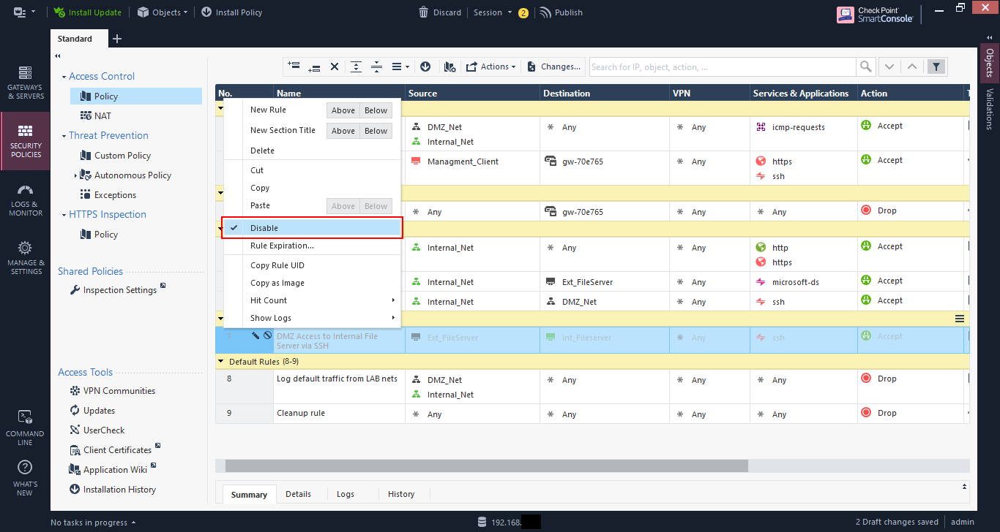

In this final part of the basic setup of a Check Point firewall I’ll be talking about Network Address Translation, or NAT.
What is NAT
When a IP packet traverses a network, the IP packet header has the Source IP address, Destination IP address, Source Port, and Destination Port, among other things. When this packet traverses routers this information is usually unchanged.
However, there are cases where this information may need to be changed, mainly when traversing network boundaries from private to public networks. Most private networks utilise RFC 1918 addresses, which define private IP addresses as:
- 192.168.0.0/16
- 172.16.0.0/12
- 10.0.0.0/8
These addresses are not routable over the public Internet and must therefore be mapped, or translated, to a proper public IP address. This is where NAT comes in.
In the diagram below (highlighted in red), it shows a packet leaving from A destined to B with a source IP of 192.168.1.10, which is not allowed over the Internet. The NAT device changes that IP to 200.200.200.10, and sends it over the Internet. When the packet is received, the NAT device translates the destination IP to the correct destination on the inside.
The NAT device must therefore maintain the state information of the flow to properly perform the translations.
Types of NAT
There are two broad categories of NAT.
- Static, or 1-to-1, NAT is where there is a single mapping between a source and the translated address. No other host utilises that translated address.
- Dynamic NAT, or NAT overload, is where multiple devices are mapped to a single, or a group of translated addresses. The number of devices mapped is greater than the number of translated addresses. This also implies that Port Address Translation, PAT, is utilised as source ports need to be assigned dynamically. PAT is shown in the diagram above (highlighted in yellow) where port 8080 is translated to port 80.
With this basic overview, let’s get to implementing on the Check Point firewall.
Lab setup
To illustrate the different types of NAT and the features of Check Point to implement, we will utilise the lab as below.

Coming out of the basic setup, some additional rules were added as shown below, including section titles for readability.
If you look at the NAT rules, only automatic rules are configured for now.
As a reminder, these automatic rules are created based on the NAT configuration of the network or host objects. In my case, the DMZ_Net and Internal_Net objects are both configured with “Add automatic address translation rules”.
There are two translation methods:
- Hide - Dynamic NAT
- Static - Static NAT
When you choose static NAT, you can specify an IP address that the object will be translated to, regardless of what network is communicating with it. I generally don’t use this and prefer to create manual NAT rules, but this depends on the complexity of the setup.

Network Behaviour
From the windows client I can access the file share of the external file server at 192.168.200.15, which is allowed via rule 5.
If you view the connections on the file server you will see the client IP as the IP address of the firewall (192.168.200.1 in this case). This is the “hide” action.
If I SSH from the internal file server to the external file server the client IP for that connection will also show up at the firewall IP address.

If you look at the log entry in the SmartLog you will see the NAT rule number matched as the automatic rule (Rule 6 in my case).
Create a manual NAT rule.
Let’s create a NAT entry that will translate the IP of the internal file server to 192.168.200.200 when connecting to the DMZ network instead of hiding behind the firewall IP address.
First start by creating an object with the translated IP address. Only configuring the name and IP address are required. Don’t configure anything else.

Now add a rule to the top by clicking on the “add rule” button and choosing “Add rule to top”.
Create a rule as shown below:
- Original Source –> Internal Fileserver
- Original Destination –> DMZ network
- Translated Source –> Translated IP host object created above
- Translated Destination –> Original
And install the policy. NAT rules like any rule, needs to the policy to be installed before becoming active.
Now from the internal file server try to SSH to the external file server.
Hmmm, it doesn’t seem to work. Maybe it’s not allowed? Let’s check the log.

The log entry seems to indicate that the traffic is allowed. And the translation is correct, the internal file server is being translated to 192.168.200.200 and it’s matching NAT rule 1.
If you look at the ARP table on the external file server, you will see that the ARP entry for 192.168.200.200 is incomplete. The external file server sees that that IP is on its local network and is sending out an ARP request, but is getting no response.
This is because the firewall needs to be configured for Proxy ARP to respond to ARP requests that it does not “own”.

As of Check Point R80.10 you can configure the firewall for the automatic creation of proxy ARP for manual NAT rules as per SK114395.
This requires connecting in expert mode, which you can access via the “CLI” icon in the web interface, or by an SSH connection to the firewall from a PC. I prefer the latter as the web-based “CLI” sucks.
If you’re not comfortable with using the CLI, then you can add manual proxy ARP entries based on sk30197 using the Gaia web interface.
Go to “Network Management” –> “ARP”. Then in the “Proxy ARP” section click “Add” to add your entry. Note that you need to install your policy in order for this to take effect.
You will also need to go to the “NAT” pane of the “Global Properties” and ensure that “Merge manual proxy ARP configuration” is checked.
I opted to go with the automatic option because the CLI doesn’t scare me, and I didn’t want add proxy ARP setting every time.
You should also note that these settings don’t keep with upgrades, so you’ll need to recreate them when you do an upgrade.

Once the proxy ARP is setup, we can try to connect via SSH and it should work now. You may need to install your policy if it doesn’t work, otherwise, recheck your settings.
If you look at the ARP table on the server, you’ll see that the ARP entry is now showing. And if you check your connections you’ll see the client IP as the translated IP (192.168.200.200 in my case).
I’ll create the reverse connection that we’ll utilise later. Here I’m not only configuring the reverse connection from the DMZ network to the NAT entry for the internal file server, but also maintaining the real IP address of the DMZ host when connecting, so it’s not being translated by the automatic rules.
Dynamic NAT
When my two Linux clients SSH to the external file server, their IPs are being hidden by the firewall’s IP address. Suppose I want to hide these clients behind a different IP for some reason. Let’s do that.
First, create a host object with the translated IP that we’ll use, in this case 192.168.200.210.

Then create a rule by setting the translated source as the NAT object created above. Then install the policy.

Oh, oh. It seems that the policy install failed. Click on “Details” to see more about why.
It failed because the range size is not the same. This is because by default Check Point will set the translated objects as static NAT and you need to change the Dynamic NAT.

Go to the NAT rule and right-click on the translated source object. Go to “NAT Method” and choose “Hide”. This sets the NAT entry to dynamic.

The entry will now show a little “H” instead of “S” to indicate “Hide”.
Now when you install the policy it should install successfully.

Now when the clients connect to the external file server, the connection entries show the translated IP of 192.168.200.210.

If you connect from the internal file server it still shows as 192.168.200.200. This is because that NAT rule is above the client rule we just created. If we put the new client NAT rule at the top, then all the connections, even from the internal file server, would show to come from 192.168.200.210.

No NAT
I would have created a rule to allow the external file server to access the internal file server via SSH and disabled it. You can disable or enable a rule by right-clicking on it and selecting “Disable”. Disabled rules are shown as “greyed out”.

The rule allows access from the real IP of the external file server, to the real IP of the internal file server.
When the connection is attempted it’s successful, and viewing the connection table on the internal file server shows the client IP as the firewall IP address.
So even though we’ve created as static NAT for the internal file server when connecting to the DMZ and vice-versa it doesn’t prevent connections to the real IP address if the rules allow it.
When you try to connect to the translated IP of the internal file server it is not successful.

Reviewing the log entries shows the connection to the real IP as allowed, but the connection to the translated IP as denied.

To allow only access to the translated IP the rule must be altered with the destination as the NAT host object as shown below.

Now a reattempt to SSH to the translated IP 192.168.200.200 is successful.

And the connection table on the file server shows the connection coming from 192.168.200.15, which is expected as the NAT rule 2 had the translated source as “original”, which means unchanged.
The logs show the access is allowed via rule 7.

And the log details show that the NAT rule 2 is being matched as expected.

PAT and hosting services on the firewall IP
As is typical now, many Internet Service Providers (ISP) limit the number of public IP addresses that they provide to customers, and nowadays you may have only one public IP to use. This public IP is the one used on the firewall. So if you have services hosted internally that you want to make public, how would you do that?
Here is where PAT comes in. It allows you to create NAT rules for ports only to allow you allow the traffic through.
In the lab I have a web server hosted at 192.168.200.10.

Create a NAT rule for traffic to the destination as the firewall gateway object and original service as the service you’re allowing through, in my case HTTP (port 80). The translated destination is the webserver object, and it’s left as static NAT.
Note that if the firewall object does not use the external IP as the main definition, then you will need to create an object with that IP to use as the original destination.
Now go to the security policy and create a rule to allow access to the firewall object (or IP object if necessary), setting the service, in this case HTTP.

Oh oh, another error on policy install. This time it says that the rule 3 conflicts with rule 8.
The reason is that rule 3 blocks the traffic to the gateway object, so that rule 8 is not effective. This is one of the things I like with Check Point validation - it’s very good.
To fix this I need to move the rule above the stealth rule, as the traffic is destined to the firewall itself.

Now my policy installed successfully, and you should be able to access the exposed server via the IP address of the firewall, in my case 192.168.1.41.

Now, let’s say I want to access the web server securely using HTTPS. However, I have an issue as the default HTTPS port is being utilised by Gaia. Yes, I could change the default port for Gaia to something else (and this is very much recommended practice), but I will server the HTTPS page of my web server using port 8080 instead.
I create another NAT rule, but this time I set the original service as HTTPS_proxy, which is TCP port 8080, and set the translated service as https.
Then modify the access rule to allow HTTPS_proxy in the services, and install the policy.
Now I can access the web page by going to https:\\192.168.1.41:8080.

In conclusion
There are much more to Check Point than just this small series, but these basic items will get you though 80% or more of the things you need to do.
As time progresses I’ll post more stuff such as distributed setups, the IPS (which I still lovingly call SYNDefender) and Identity Awareness. I also want to explore some of the newer features with the networking components as I’ve never thought that Check Point’s network functionality was strong and what to see if that has changed.
I hope you’ve found this helpful. Feel free to connect with me and give me feedback.